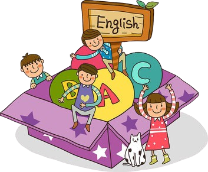

Evolución
Aprender inglés en niños con discapacidad visual fomenta el acceso a recursos educativos globales, mejora la inclusión social y el desarrollo cognitivo, y abre oportunidades futuras académicas y laborales. Además, facilita el uso de herramientas tecnológicas disponibles en inglés, proporcionándoles una valiosa ventaja para su crecimiento personal y profesional.
